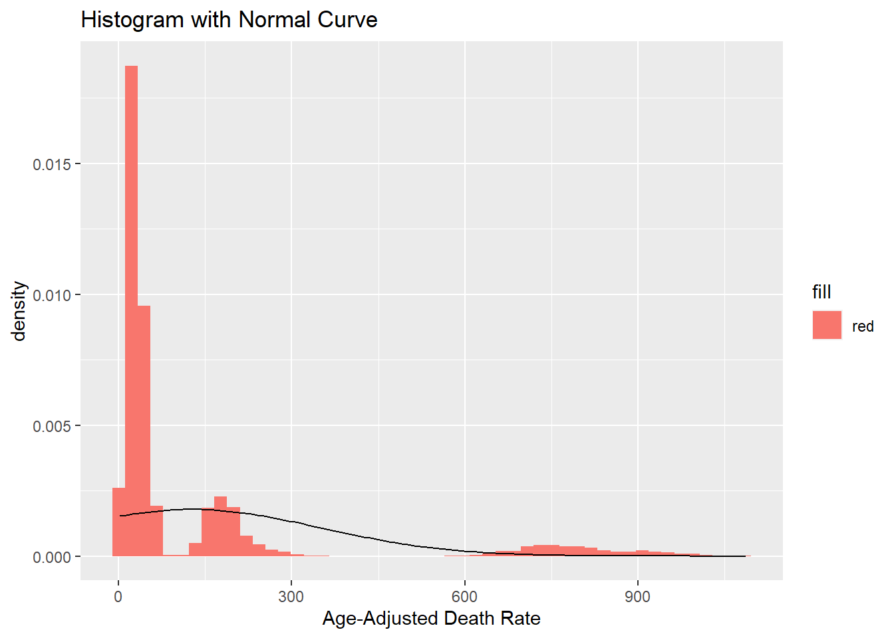
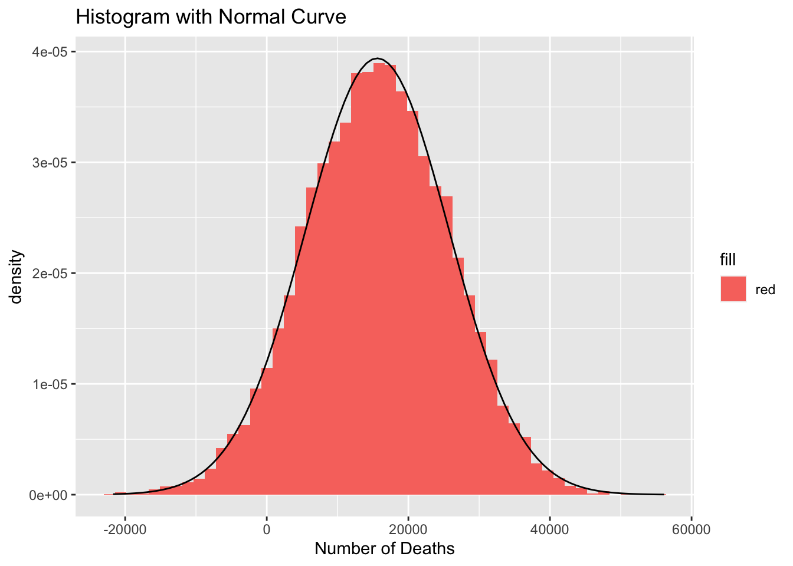
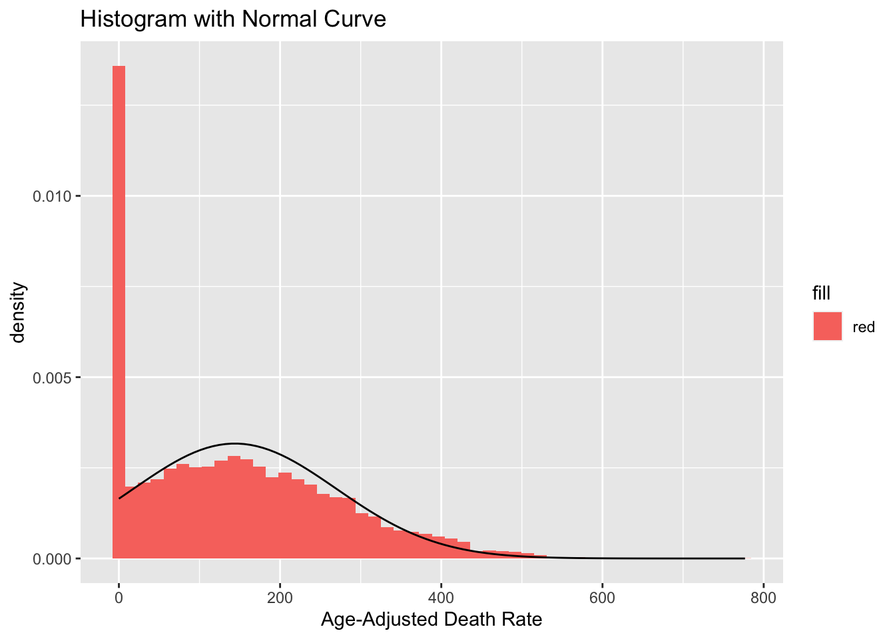

The “NCHS - Leading Causes of Death: United States” dataset used for this exercise provides data on the age-adjusted death rates for the 10 leading causes of death in the U.S. (1999-2017). The source is the mortality data from the National Vital Statistics System (CDC/NCHS).
Resident death certificates from all 50 states and D.C. were used to collect the data on demographic and medical characteristics. Age-adjusted death rates (per 100,000 population) are based on the 2000 U.S. standard population. Populations used for computing death rates after 2010 are postcensal estimates based on the 2010 census.
The dataset has 10,868 observations and six variables: year, X113 cause name (specific cause of death), cause name (categorical cause of death), state, deaths, and age-adjusted death rate. To learn more about the data, please visit the CDC website.
Part 2 - Processing the Data
#Load the required packageslibrary(dplyr)
Attaching package: 'dplyr'
The following objects are masked from 'package:stats':
filter, lag
The following objects are masked from 'package:base':
intersect, setdiff, setequal, union
library(ggplot2)#Load the raw datacdc_raw <-read.csv("NCHS_Leading_Causes_of_Death.csv")#Get an overview and summary of the raw datastr(cdc_raw)
Year X113.Cause.Name Cause_Name State
Min. :1999 Length:10868 Length:10868 Length:10868
1st Qu.:2003 Class :character Class :character Class :character
Median :2008 Mode :character Mode :character Mode :character
Mean :2008
3rd Qu.:2013
Max. :2017
Deaths Age_Adjusted_Death_Rate
Min. : 21 Min. : 2.6
1st Qu.: 612 1st Qu.: 19.2
Median : 1718 Median : 35.9
Mean : 15460 Mean : 127.6
3rd Qu.: 5756 3rd Qu.: 151.7
Max. :2813503 Max. :1087.3
#Check for weird symbols or missing values in all six variablestable(cdc_raw$Year, useNA ="always")
Alabama Alaska Arizona
209 209 209
Arkansas California Colorado
209 209 209
Connecticut Delaware District of Columbia
209 209 209
Florida Georgia Hawaii
209 209 209
Idaho Illinois Indiana
209 209 209
Iowa Kansas Kentucky
209 209 209
Louisiana Maine Maryland
209 209 209
Massachusetts Michigan Minnesota
209 209 209
Mississippi Missouri Montana
209 209 209
Nebraska Nevada New Hampshire
209 209 209
New Jersey New Mexico New York
209 209 209
North Carolina North Dakota Ohio
209 209 209
Oklahoma Oregon Pennsylvania
209 209 209
Rhode Island South Carolina South Dakota
209 209 209
Tennessee Texas United States
209 209 209
Utah Vermont Virginia
209 209 209
Washington West Virginia Wisconsin
209 209 209
Wyoming <NA>
209 0
summary(cdc_raw$Deaths)
Min. 1st Qu. Median Mean 3rd Qu. Max.
21 612 1718 15460 5756 2813503
summary(cdc_raw$Age_Adjusted_Death_Rate)
Min. 1st Qu. Median Mean 3rd Qu. Max.
2.6 19.2 35.9 127.6 151.7 1087.3
#Drop the "X113.Cause.Name" variable for the processed datacdc <-select(cdc_raw, -X113.Cause.Name)attach(cdc)#Get an overview and summary of the processed datastr(cdc)
Year Cause_Name State Deaths
Min. :1999 Length:10868 Length:10868 Min. : 21
1st Qu.:2003 Class :character Class :character 1st Qu.: 612
Median :2008 Mode :character Mode :character Median : 1718
Mean :2008 Mean : 15460
3rd Qu.:2013 3rd Qu.: 5756
Max. :2017 Max. :2813503
Age_Adjusted_Death_Rate
Min. : 2.6
1st Qu.: 19.2
Median : 35.9
Mean : 127.6
3rd Qu.: 151.7
Max. :1087.3
There are no weird symbols or missing values in the raw data. Because the variables for “X113 cause name” and “cause name” provide the same information, the variable for “X113 cause name” is removed from the processed data. The new dataset has 10,868 observations and five variables: year, cause name, state, deaths, and age-adjusted death rate.
Part 3 - Exploring the Data
#Summary tables for the categorical variable "Year"table(Year)
19 years (1999-2017) are represented in the categorical variable “Year”, each with 572 observations (5.3%).
#Summary tables for the categorical variable "Cause_Name"table(Cause_Name)
Cause_Name
All causes Alzheimer's disease Cancer
988 988 988
CLRD Diabetes Heart disease
988 988 988
Influenza and pneumonia Kidney disease Stroke
988 988 988
Suicide Unintentional injuries
988 988
prop.table(table(Cause_Name))
Cause_Name
All causes Alzheimer's disease Cancer
0.09090909 0.09090909 0.09090909
CLRD Diabetes Heart disease
0.09090909 0.09090909 0.09090909
Influenza and pneumonia Kidney disease Stroke
0.09090909 0.09090909 0.09090909
Suicide Unintentional injuries
0.09090909 0.09090909
11 cause categories are represented in the categorical variable “Cause_Name”, each with 988 observations (9.1%). The cause categories are “All causes”, “Alzheimer’s disease”, “Cancer”, “CLRD”, “Diabetes”, “Heart disease”, “Influenza and pneumonia”, “Kidney disease”, “Stroke”, “Suicide”, and “Unintentional injuries”.
#Summary tables for the categorical variable "State"table(State)
State
Alabama Alaska Arizona
209 209 209
Arkansas California Colorado
209 209 209
Connecticut Delaware District of Columbia
209 209 209
Florida Georgia Hawaii
209 209 209
Idaho Illinois Indiana
209 209 209
Iowa Kansas Kentucky
209 209 209
Louisiana Maine Maryland
209 209 209
Massachusetts Michigan Minnesota
209 209 209
Mississippi Missouri Montana
209 209 209
Nebraska Nevada New Hampshire
209 209 209
New Jersey New Mexico New York
209 209 209
North Carolina North Dakota Ohio
209 209 209
Oklahoma Oregon Pennsylvania
209 209 209
Rhode Island South Carolina South Dakota
209 209 209
Tennessee Texas United States
209 209 209
Utah Vermont Virginia
209 209 209
Washington West Virginia Wisconsin
209 209 209
Wyoming
209
prop.table(table(State))
State
Alabama Alaska Arizona
0.01923077 0.01923077 0.01923077
Arkansas California Colorado
0.01923077 0.01923077 0.01923077
Connecticut Delaware District of Columbia
0.01923077 0.01923077 0.01923077
Florida Georgia Hawaii
0.01923077 0.01923077 0.01923077
Idaho Illinois Indiana
0.01923077 0.01923077 0.01923077
Iowa Kansas Kentucky
0.01923077 0.01923077 0.01923077
Louisiana Maine Maryland
0.01923077 0.01923077 0.01923077
Massachusetts Michigan Minnesota
0.01923077 0.01923077 0.01923077
Mississippi Missouri Montana
0.01923077 0.01923077 0.01923077
Nebraska Nevada New Hampshire
0.01923077 0.01923077 0.01923077
New Jersey New Mexico New York
0.01923077 0.01923077 0.01923077
North Carolina North Dakota Ohio
0.01923077 0.01923077 0.01923077
Oklahoma Oregon Pennsylvania
0.01923077 0.01923077 0.01923077
Rhode Island South Carolina South Dakota
0.01923077 0.01923077 0.01923077
Tennessee Texas United States
0.01923077 0.01923077 0.01923077
Utah Vermont Virginia
0.01923077 0.01923077 0.01923077
Washington West Virginia Wisconsin
0.01923077 0.01923077 0.01923077
Wyoming
0.01923077
52 states/districts are represented in the categorical variable “State”, each with 209 observations (1.9%). All 50 states are represented, as well as “District of Columbia” and “United States”.
#Summary statistics and histogram for the continuous variable "Deaths"summary(Deaths)
Min. 1st Qu. Median Mean 3rd Qu. Max.
21 612 1718 15460 5756 2813503
sd(Deaths)
[1] 112876
ggplot(cdc, aes(x = Deaths)) +geom_histogram(aes(y =after_stat(density), fill ="red"), bins =50) +stat_function(fun = dnorm, args =with(cdc, c(mean =mean(Deaths), sd =sd(Deaths)))) +scale_x_continuous("Number of Deaths") +ggtitle("Histogram with Normal Curve")
The histogram for the continuous variable “Deaths” does not show an approximately normal distribution. The mean is 15,460 deaths, and the standard deviation is 112,876 deaths.
#Summary statistics and histogram for the continuous variable "Age_Adjusted_Death_Rate"summary(Age_Adjusted_Death_Rate)
Min. 1st Qu. Median Mean 3rd Qu. Max.
2.6 19.2 35.9 127.6 151.7 1087.3
sd(Age_Adjusted_Death_Rate)
[1] 223.6398
ggplot(cdc, aes(x = Age_Adjusted_Death_Rate)) +geom_histogram(aes(y =after_stat(density), fill ="red"), bins =50) +stat_function(fun = dnorm, args =with(cdc, c(mean =mean(Age_Adjusted_Death_Rate), sd =sd(Age_Adjusted_Death_Rate)))) +scale_x_continuous("Age-Adjusted Death Rate") +ggtitle("Histogram with Normal Curve")

The histogram for the continuous variable “Age_Adjusted_Death_Rate” does not show an approximately normal distribution. The mean is 127.6 deaths per 100,000 population, and the standard deviation is 223.6 deaths per 100,000 population.
This section contributed by Liza Hall
Synthetic Data
To create a synthetic dataset based on the previous analysis, I provided a LLM AI tool (ChatGPT) the following information, so that it could generate some code to generate data based off of the numbers provided.
‘Year’
‘Age_Adjusted_Death_Rate’
’Cause_Name”
‘State’
‘Deaths’
Min. : 1999
1st Qu. : 2003
Median : 2008
Mean : 2008
3rd Qu. : 2013
Max. : 2017
Min. : 2.6
1st Qu.: 19.2
Median : 35.9
Mean : 127.6
3rd Qu.: 151.7
Max. :1087.3
Length:10868
Class :character
Mode :character
Cause categories:
All causes, Alzheimer’s disease, Cancer, CLRD, Diabetes, Heart disease, Influenza and pneumonia, Kidney disease, Stroke, Suicide, Unintentional injuries
Length:10868
Class :character
Mode :character
Min. : 21
1st Qu. : 612
Median : 1718
Mean : 15460
3rd Qu. : 5756
Max. : 28135503
Based on what the AI generated I was able to edit and adjust as needed to get the following code:
Loading the necessary libraries and setting a seed.
# Load necessary librarieslibrary(dplyr)library(ggplot2)# Set seed for reproducibilityset.seed(042)
Generating numerical values for synthetic dataset.
# Define the number of observationsnum_obs <-10000# Generate synthetic data for 'Year'year <-sample(1999:2017, num_obs, replace =TRUE)# Generate synthetic data for 'age_adjusted_death_rate'age_adjusted_death_rate <-rnorm(num_obs, mean =127.6, sd =150)# Ensure no negative values for death ratesage_adjusted_death_rate <-pmax(age_adjusted_death_rate, 0)# Generate synthetic data for 'Deaths'deaths <-round(rnorm(num_obs, mean =15460, sd =10000))
# Create a data framesynthetic_data <-data.frame(Year = year,Age_Adjusted_Death_Rate = age_adjusted_death_rate,Cause_Name = cause_name,State = state,Deaths = deaths)
Analyzing the Data
Summary of synthetic dataset.
# Display summary of synthetic datasummary(synthetic_data)
Year Age_Adjusted_Death_Rate Cause_Name State
Min. :1999 Min. : 0.00 Length:10000 Length:10000
1st Qu.:2003 1st Qu.: 25.24 Class :character Class :character
Median :2008 Median :127.86 Mode :character Mode :character
Mean :2008 Mean :143.95
3rd Qu.:2013 3rd Qu.:228.17
Max. :2017 Max. :776.81
Deaths
Min. :-21699
1st Qu.: 8614
Median : 15666
Mean : 15611
3rd Qu.: 22600
Max. : 56124
Summary for the variable “year”.
#Summary tables for the categorical variable "year"table(year)
#Summary tables for the categorical variable "cause_name"table(cause_name)
cause_name
All causes Alzheimer's disease Cancer
954 905 927
CLRD Diabetes Heart disease
921 886 873
Influenza and pneumonia Kidney disease Stroke
950 887 931
Suicide Unintentional injuries
875 891
Summary for the variable “state”.
#Summary tables for the categorical variable "state"table(state)
state
Alabama Alaska Arizona Arkansas California
220 196 197 207 189
Colorado Connecticut Delaware Florida Georgia
216 214 196 197 170
Hawaii Idaho Illinois Indiana Iowa
199 210 175 195 196
Kansas Kentucky Louisiana Maine Maryland
200 206 210 209 217
Massachusetts Michigan Minnesota Mississippi Missouri
171 251 193 218 192
Montana Nebraska Nevada New Hampshire New Jersey
242 187 182 201 196
New Mexico New York North Carolina North Dakota Ohio
222 203 197 202 192
Oklahoma Oregon Pennsylvania Rhode Island South Carolina
171 209 195 183 178
South Dakota Tennessee Texas Utah Vermont
226 217 198 174 195
Virginia Washington West Virginia Wisconsin Wyoming
180 186 200 213 207
Summary statistics and histogram for “death”.
#Summary statistics and histogram for the continuous variable "Deaths"summary(deaths)
Min. 1st Qu. Median Mean 3rd Qu. Max.
-21699 8614 15666 15611 22600 56124
sd(deaths)
[1] 10127.2
ggplot(synthetic_data, aes(x = deaths)) +geom_histogram(aes(y =after_stat(density), fill ="red"), bins =50) +stat_function(fun = dnorm, args =with(synthetic_data, c(mean =mean(deaths), sd =sd(deaths)))) +scale_x_continuous("Number of Deaths") +ggtitle("Histogram with Normal Curve")

The histogram displays a strong normal distribution. Which varies from what was found in the original dataset. I suspect that this is due to the randomized nature of the synthetic data, vs the real data which contains real-world biases and trends.
Summary statistics and histogram for “age_adjusted_death_rate”.
#Summary statistics and histogram for the continuous variable "age_adjusted_death_rate"summary(age_adjusted_death_rate)
Min. 1st Qu. Median Mean 3rd Qu. Max.
0.00 25.24 127.86 143.95 228.17 776.81
sd(age_adjusted_death_rate)
[1] 125.881
ggplot(synthetic_data, aes(x = age_adjusted_death_rate)) +geom_histogram(aes(y =after_stat(density),fill ="red"), bins =50) +stat_function(fun = dnorm, args =with(synthetic_data, c(mean =mean(age_adjusted_death_rate),sd =sd(age_adjusted_death_rate)))) +scale_x_continuous("Age-Adjusted Death Rate") +ggtitle("Histogram with Normal Curve")

This histogram is closer in appearance to the one generated from the original dataset. It does not follow an approximately normal distribution, the mean is 143.95 and the standard deviation is 125.881 which while not exactly the same, is in the same sort of range as the original dataset.
Final thoughts
Overall I noticed that the synthetic dataset had more variation in values than the original. As stated previously I suspect that this is due to the random nature of the data generation within the synthetic dataset. Despite being based on statistics pulled from analysis of the original data, the syntehtic dataset does not have the nuances or biases of the original data.